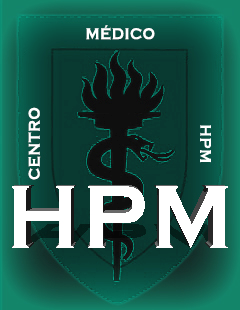
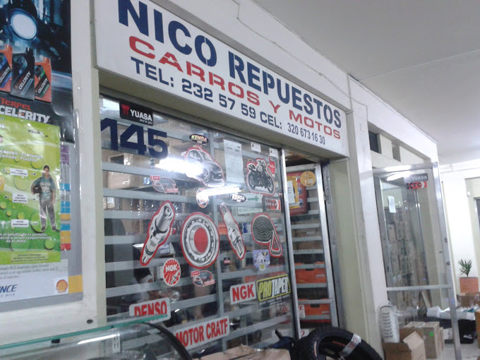
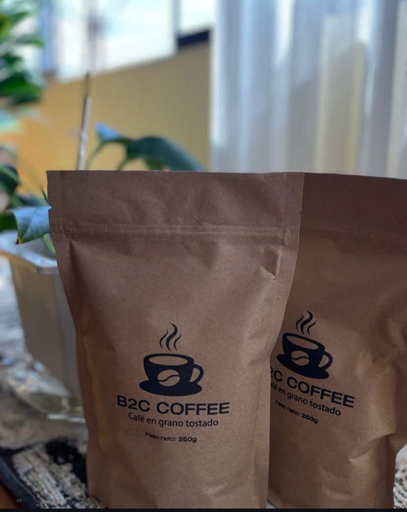

Programador Front-End
Vision Click | Málaga, España | Marzo 2025 - Junio 2025
- Experiencia en manejo de panel de gestión Plesk para la administración de webs y bases de datos (BBDD) de las mismas.
- Creación de una tienda PrestaShop completa desde cero, implementando categorías, precios, pasarelas de pago, métodos de pago, tarifas de envío, etc.
- Manejo de WordPress y experiencia en personalización de los mismos mediante temas hijos (functions.php, style.css).
- Bases para edición de webs hechas con WordPress mediante Elementor e incluso experiencia en WooCommerce.
- Ajustes responsivos a múltiples dispositivos.
- Elaboración de kits digitales mediante gestores de web personalizados, que también se podrían seguir personalizando según una necesidad específica.
Asistente Administrativo
Centro Médico HPM | Lima, Perú | Julio 2024 - Actualidad

- Redacción de informes médicos.
- Revisión de informes médicos.
-
Contacto:
- Dr. Hugo Contreras -> +51 999632088
- Dra. Carmen Villanueva -> +51 998814099
Dependiente de local de repuestos de motos
Nico Repuestos | Medellín, Colombia | Junio 2023 - Julio 2023

- Atención al cliente.
- Repositor de stock.
- Armador de pedidos y despacho de los mismos.
Operario Cafetero
B2C (Business to Customer) | Amazonas, Perú | Agosto 2022 - Octubre 2022

- Encargado de todos los procesos generales del café, como plantado, cosechado, despulpado, lavado, secado, tostado, molido y envasado.